RTR: Imperium Surrectum
RTR: Imperium SurrectumThe Iberians: Arevaci, Edetani and Lusitani
2022-09-14 · Rex Basiliscus
Hello, everyone!
Welcome to the next of the Dev Diaries. We're moving further west today, into the lands beyond the Pyrenees. I'll be bringing you an overview of three Iberian factions: Arevaci, Edetani and the Lusitani. I'll leave our main historian @Mausolos of Mylasa to say something about them and what you should be expecting in your campaigns!
Arevaci
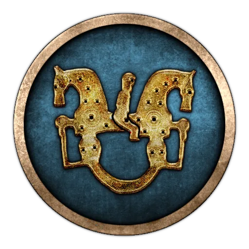
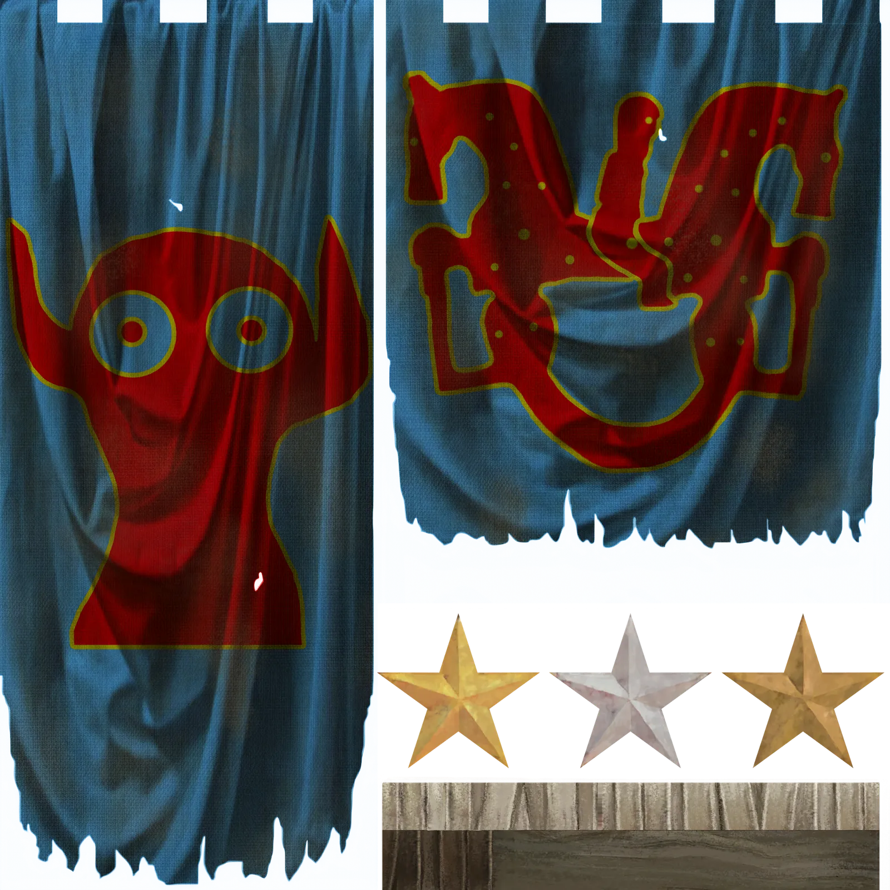
The Arevaci were the most famous of a group of people for whom the Greeks coined the term Celtiberians. According to the polymath Poseidonios of Apameia (135-51 BC), Celts and Iberians had mixed in what is now Castille and Aragon, but, archaeologically, the Celtic elements can be seen to dominate the Iberian ones. The Celtiberians in a narrower sense were made up of at least four tribes (Arevaci, Lusones, Belli and Titti), but the neighbouring Vettones, Carpetani and Vaccaei were of similar culture and are often included in the wider definition of Celtiberia.
Due to their location in the mountainous Mesata, the Celtiberians only came into contact with the Carthaginians at the end of the 3rd century BC. They supplied both sides in the 2nd Punic War with allied contingents and mercenaries and had already served the Syracusan tyrants in the 4th century BC. After the 2nd Punic War, the Celtiberians resisted the Romans in three bloody wars, of which the second one from 154 BC caused a panic in Rome due to the heavy losses of men and prompted modern commentators to speak of a "Roman Vietnam" in Spain. Even after Scipio Aemilianus had finally taken the capital of the Arevaci, Numantia, in 133 BC, their military power was not broken. When the Cimbri and Teutones turned westwards into Hispania after routing several Roman armies at the end of the 2nd century BC, their force was utterly destroyed by the Celtiberians.
In 270 BC, the Arevaci control the lands around Numantia. Unite the Celtiberian lands and brace yourself for the expansion of Carthage or other Mediterranean powers and keep a watchful eye on the Edetani.
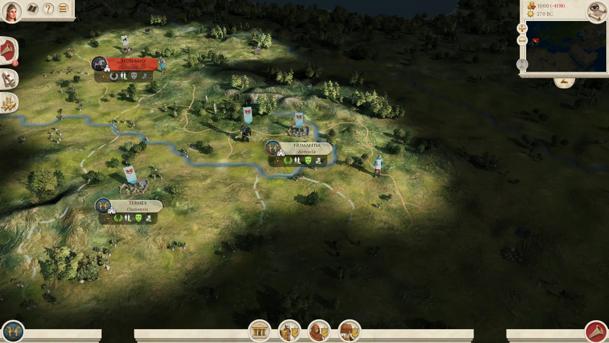
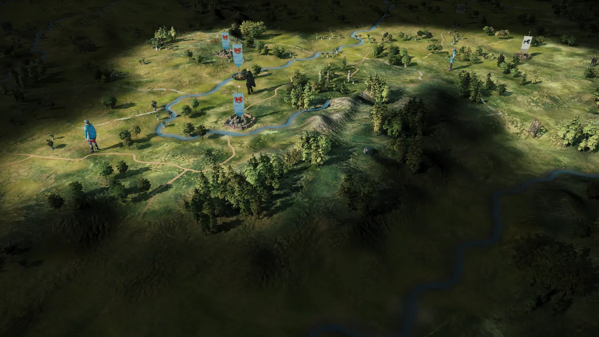
Next up,
Edetani
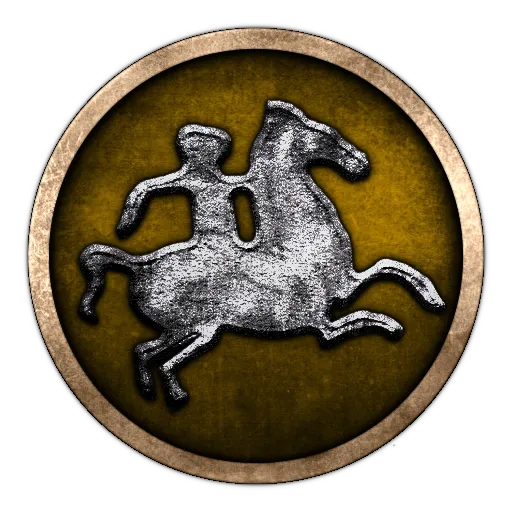
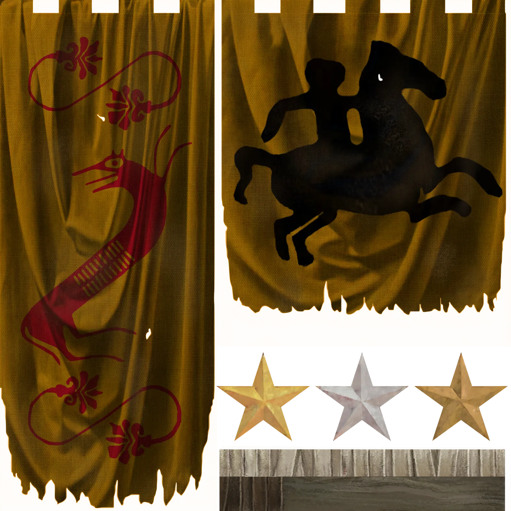
The Edetani were an Iberian people on the Eastern coast of what is now Spain. The Iberians mostly lived in major settlements in Southern and Eastern Hispania and started using written scripts in the 5th century BC. The Edetani were one of the most powerful coalitions of Iberian tribes and city-states, centred on their capital Edeta and the mighty walled port city of Saguntum, modern Sagunto near Valencia.
As such, they formed a formidable obstacle for the Carthaginian conquest of the eastern Iberian Peninsula. Famously, Saguntum sought an alliance with Rome, but was besieged and taken by Hannibal in 219 BC. This event directly led to the opening of the 2nd Punic War, in which both sides vied over the support of the Edetani.
In 270 BC, the Romans are yet far away, but Carthaginian expansion already appears as a threat on the horizon. Strengthen your position by integrating the neighbouring Iberian entities into your kingdom and beware the power of the Celtiberians - they may help you to resist the foreign powers, or try to destroy you.
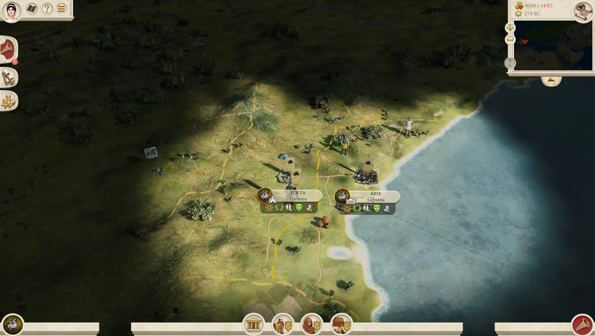
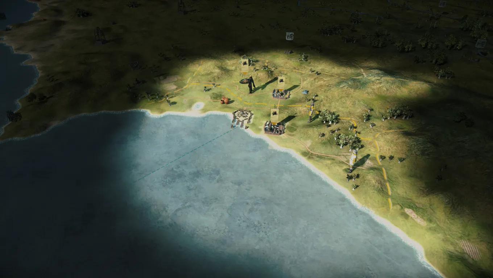
And finally,
Lusitani
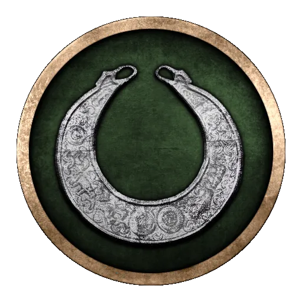
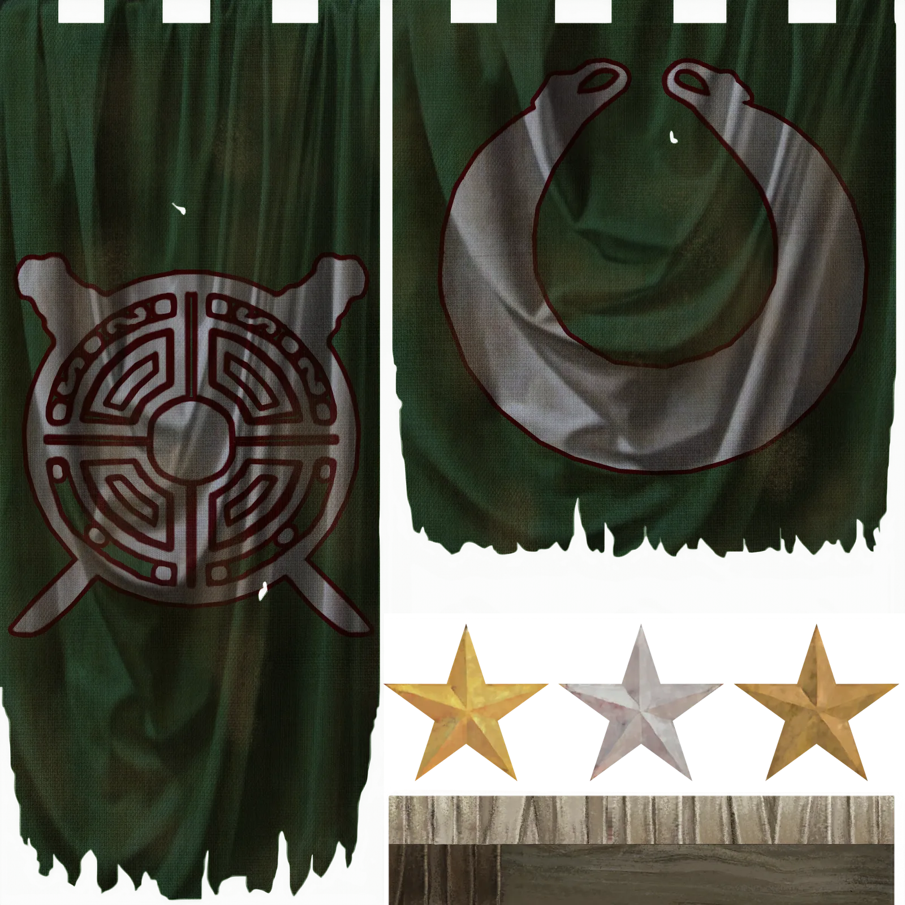
The Lusitani were a pre-Celtic people in what is now mid Portugal and the western fringe of Spain. Their origins and early culture remains a mystery, but they may have migrated from atlantic France to the mouth of the Tagus (Tejo) river in the late 2nd millenium BC. By the 3rd century BC, they had settled the banks of the Tagus in the interior north east of the Phoenician trade post of Olysipo, modern Lisbon, with their capital at Oxthraca.
Their numbers hardly exceeded 100 000 men in the 3rd cenrury, but, in the 2nd century, they would become one of the worst enemies the Romans had ever faced. From the 2nd Punic War onwards, the Lusitanians had gained a reputation for bravery and dexterity, and under their enigmatic leader Viriatus, who never commanded more than 12 000 Lusitanians in his army, they destroyed at least five Roman legions and killed several Roman governors in the years 147-139 BC. In the late 140s BC, they virtually controlled at least half of the Iberian Peninsula, with the still numerically superior Romans forced to retreat to the Mediterranean coast.
In 270 BC, this is all still far away, and as the Lusitanian player, your first target will be to unit the other tribes in what is now Portugal- the Grovii, Turduli and others- under your hegemony. Yet, be aware of the Carthaginians, Iberians and Celtiberians- possible friends or foes.
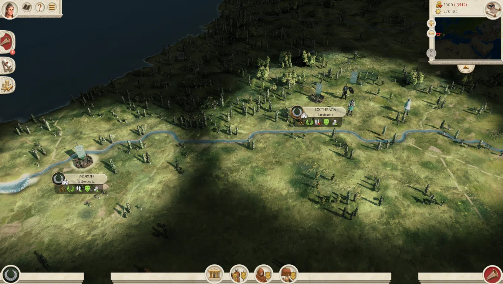
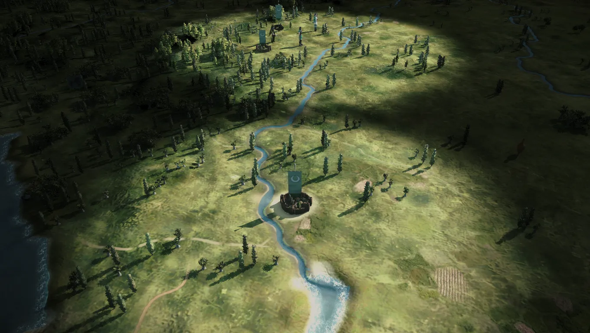
That's all we have prepared for this Dev Diary, but stay tuned - more is to come very shortly! In the meantime, let us know in the a channel which of the three factions in Iberia will you play first!
We also ask you guys to use that channel only for DD discussions and use our a channel channel for any other topics you'd like to ask us.
Thank you